Conhecendo os componentes
Nesta seção você conhecerá os principais componentes de um computador de mesa e aprenderá sobre suas funções.
Gabinete
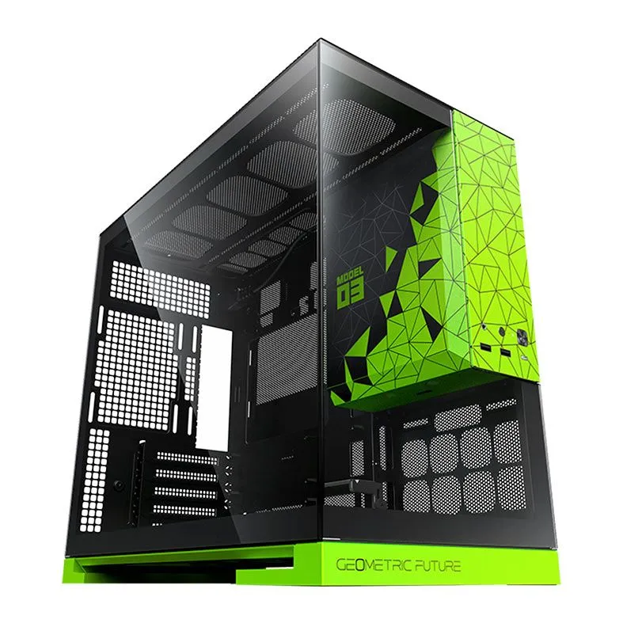
Gabinete do computador.
O gabinete (também conhecido como Chassi ou Torre): É a estrutura externa — geralmente fabricada em liga de aço, alumínio e vidro temperado — responsável por sustentar e proteger os componentes internos contra poeira, impactos físicos e interferências externas. Além da função estrutural, o gabinete desempenha um papel crítico na gerenciamento térmico (airflow), direcionando o fluxo de ar de ventoinhas para resfriar os componentes mais exigidos. Seu formato também dita o padrão de tamanho das peças (como os padrões ATX, Micro-ATX e Mini-ITX).
Placa-mãe
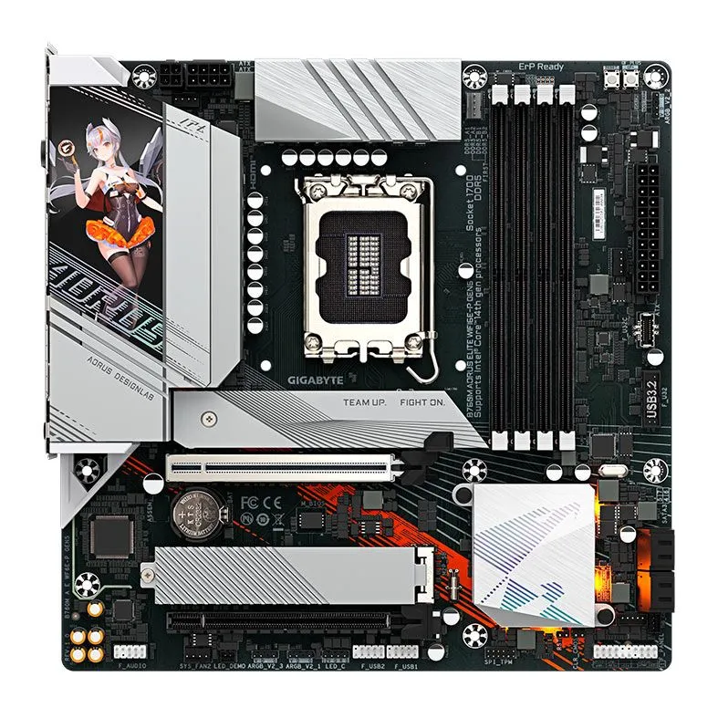
Placa-mãe.
A placa-mãe (Motherboard): É a placa de circuito impresso principal que atua como a espinha dorsal de todo o sistema. Ela integra fisicamente e conecta eletricamente todos os componentes por meio de barramentos de dados e energia. Abriga o soquete da CPU, os slots para a memória RAM, as conexões de armazenamento (como portas SATA e M.2), os slots de expansão PCIe (utilizados por placas de vídeo) e o chip BIOS/UEFI, responsável por realizar a checagem básica do hardware e inicializar o sistema operacional.
Processador
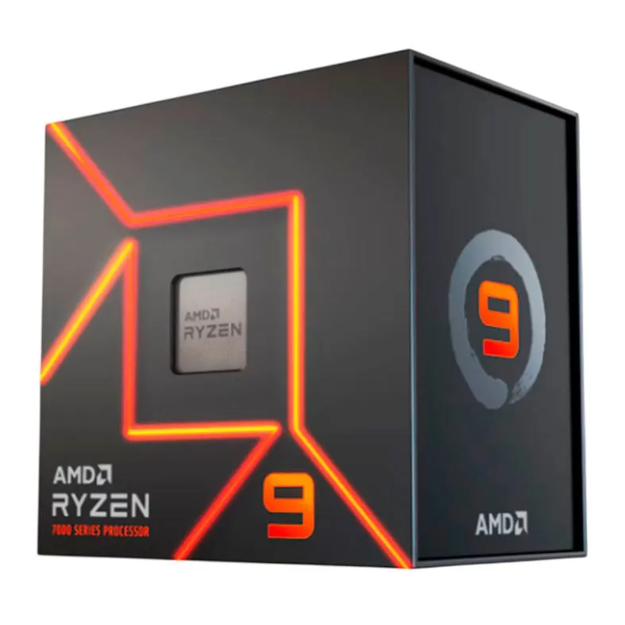
Processador (CPU).
O processador (CPU - Unidade Central de Processamento): Considerado o "cérebro" do computador, é a unidade encarregada de interpretar e executar as instruções passadas pelos softwares e pelo sistema operacional. É composto por múltiplos núcleos de processamento (cores), a Unidade Lógica e Aritmética (ULA), registradores e a memória Cache (L1, L2 e L3), uma memória ultrarrápida que reduz o tempo de busca por dados frequentes. Sua velocidade de processamento é regulada pela frequência de clock (medida em GHz).
Memória RAM
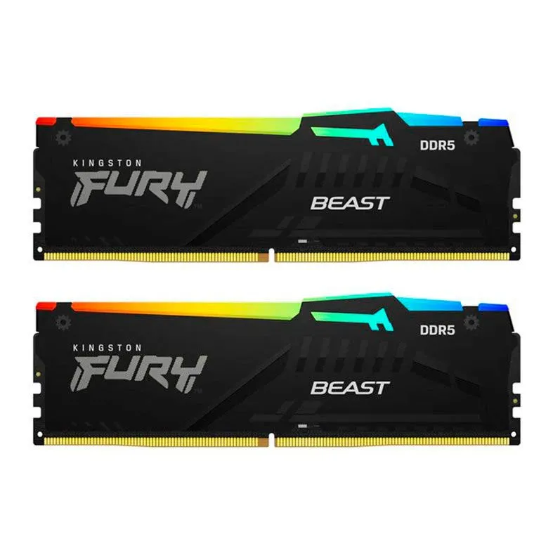
Memória RAM.
A memória RAM (Random Access Memory): É a memória principal de acesso aleatório e de natureza volátil, o que significa que seus dados são apagados quando o computador é desligado. A RAM atua como uma área de trabalho temporária e de altíssima velocidade para o processador, armazenando os dados das aplicações e abas do navegador que estão em uso no exato momento. Quanto maior a capacidade (medida em GB) e a velocidade (como nos padrões DDR4 e DDR5), mais tarefas o computador consegue executar simultaneamente sem travamentos.
Armazenamento
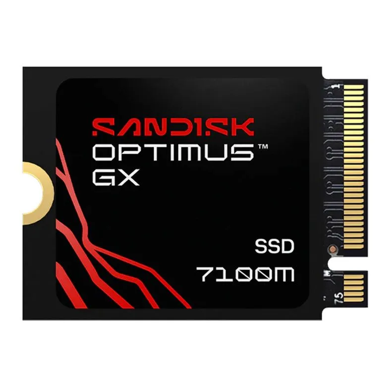
Dispositivo de armazenamento.
(Memória Secundária): Trata-se do componente responsável por guardar
dados de forma permanente (não-volátil), mantendo o sistema operacional,
programas e arquivos pessoais gravados mesmo com a máquina desligada.
Apresenta-se principalmente em dois tipos:
• HD (Hard Disk Drive): Dispositivo mecânico que grava dados em discos
magnéticos que giram em alta velocidade, oferecendo grande capacidade por
um custo menor, porém com menor velocidade de leitura e escrita.
• SSD (Solid State Drive): Dispositivo moderno baseado em chips de memória
flash (padrões SATA ou NVMe). Por não conter partes móveis, é muito mais
resistente e atinge velocidades de leitura/escrita drasticamente superiores
às do HD, acelerando a inicialização do sistema e o carregamento de arquivos.
Fonte de alimentação
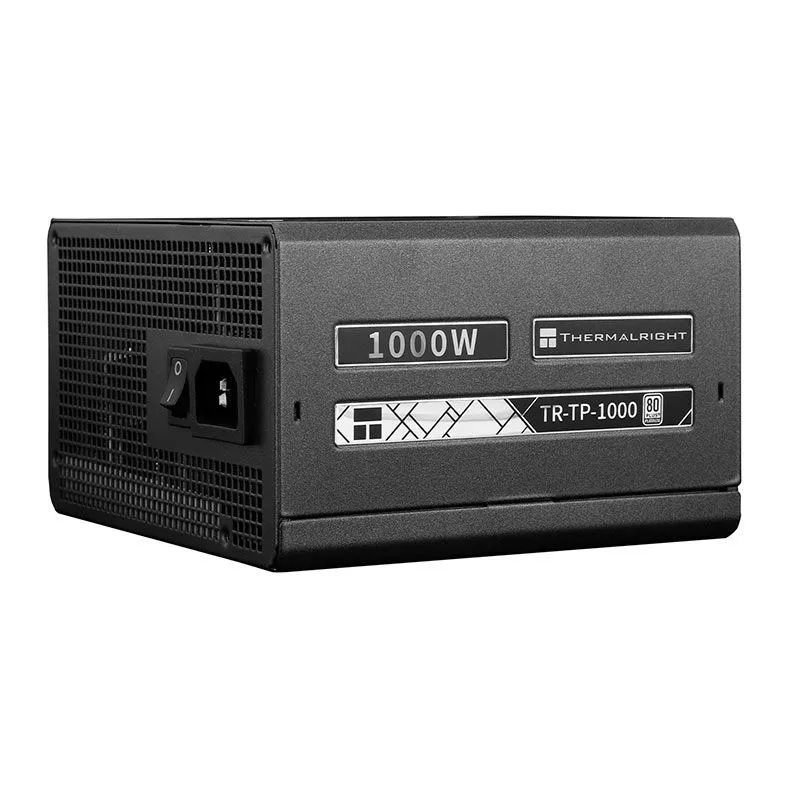
Fonte de alimentação.
A fonte de alimentação (PSU - Power Supply Unit): É o componente encarregado de converter a corrente alternada (CA) fornecida pela tomada da rede elétrica em corrente contínua (CC), nas voltagens específicas exigidas pelos componentes internos (como 3.3V, 5V e 12V). Uma fonte de qualidade distribui energia de forma limpa e estável, contando com proteções elétricas contra curtos-circuitos e picos de tensão, além de certificações de eficiência (como o selo 80 PLUS).
Placa de vídeo
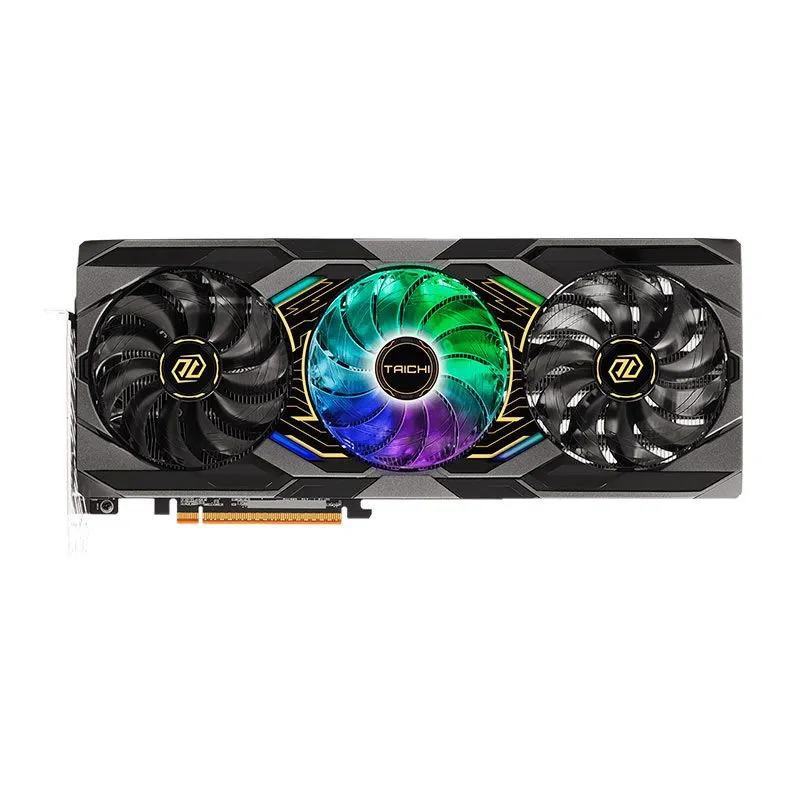
Placa de vídeo.
A placa de vídeo (GPU - Unidade de Processamento Gráfico): É o circuito especializado na geração e renderização do sinal visual que é enviado ao monitor. A GPU possui uma arquitetura otimizada para realizar milhares de cálculos matemáticos paralelos ao mesmo tempo. Pode ser integrada (embutida no próprio processador, compartilhando a memória RAM principal) ou dedicada (uma placa independente dotada de sua própria memória de alta velocidade, chamada VRAM), indispensável para jogos pesados, edição de vídeo, computação visual e inteligência artificial.
Galeria de componentes
Confira as imagens de alguns dos componentes apresentados neste guia.
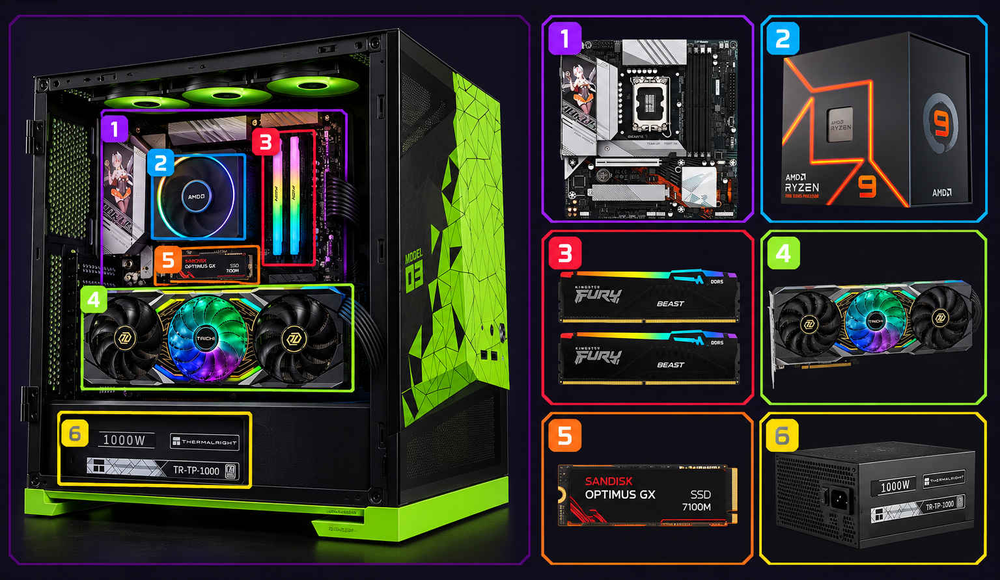
Computador montado.
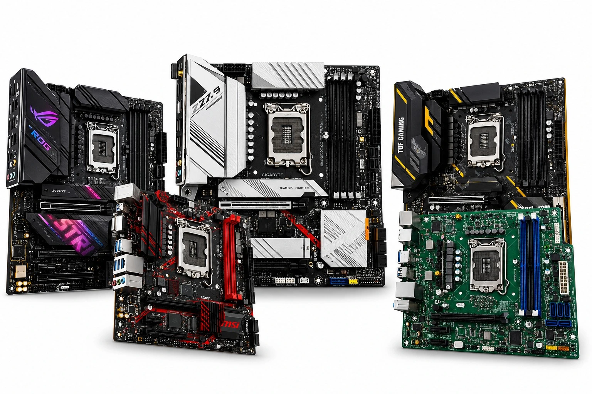
Placas-mãe.
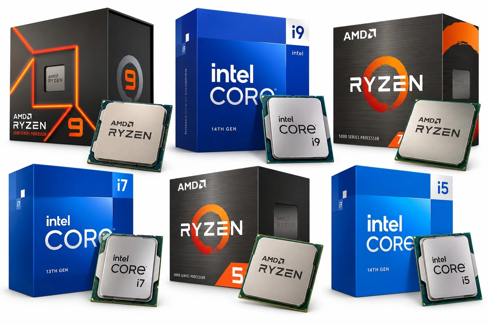
Processadores.
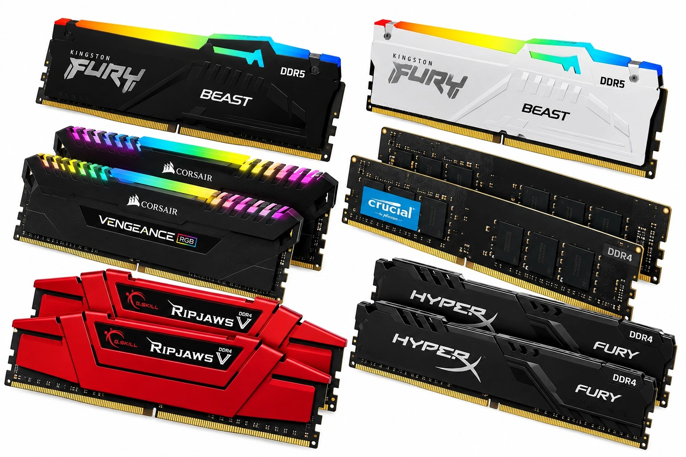
Memórias RAM.
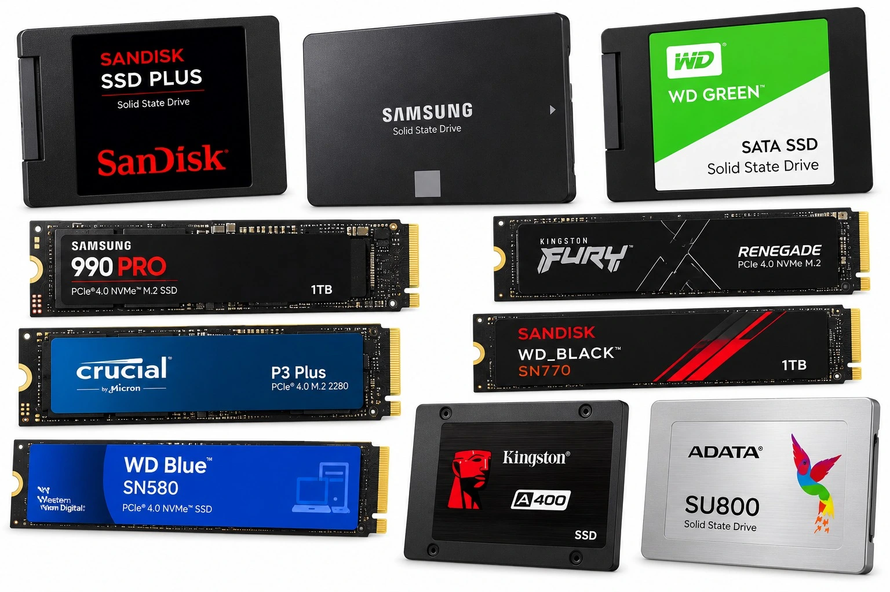
Armazenamento.
Fontes de alimentação.
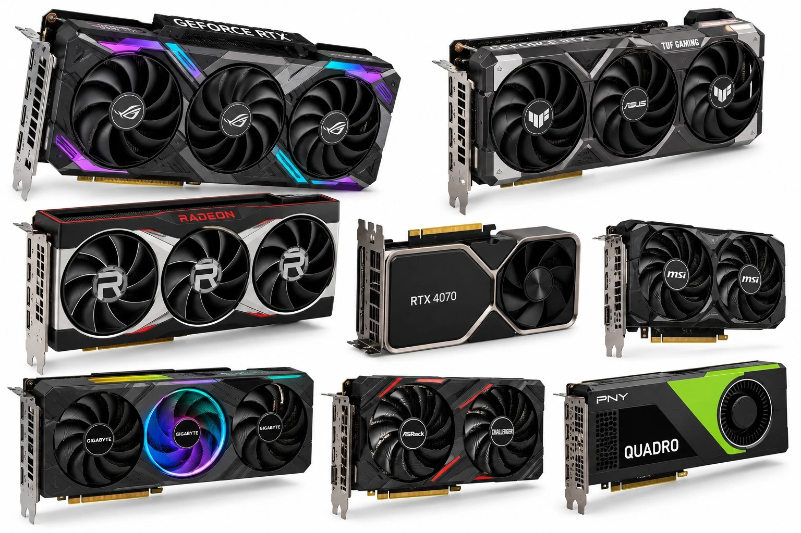
Placas de vídeo.
Referências
• STALLINGS, William. Arquitetura e Organização de Computadores. 10. ed. São Paulo: Pearson Education do Brasil, 2017.
• TANENBAUM, Andrew S.; AUSTIN, Todd. Organização Estruturada de Computadores. 6. ed. São Paulo: Pearson Education do Brasil, 2013.
• MORIMOTO, Carlos Eduardo. Hardware, o Guia Definitivo. Porto Alegre: GDH Press, 2007.
• INTEL CORPORATION. How Processors and Computer Memory Work. Documentação técnica e guias de arquitetura.
• CORSAIR. A anatomia de um PC: O que está no interior e o que faz cada parte?